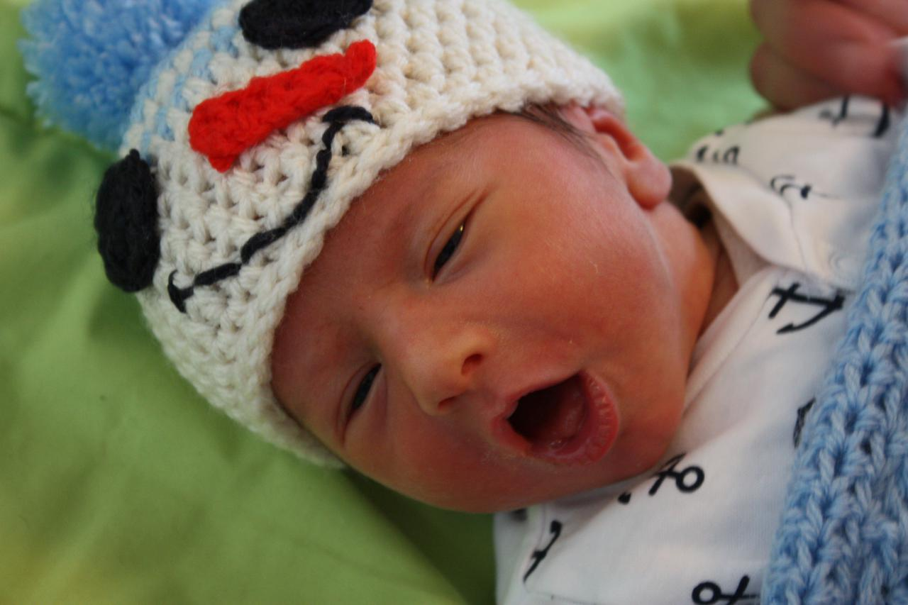

بابای آیدا و آیدین

بچه که بودم همیشه با خودم فکر میکردم اگر ازدواج کنم چهار تا بچه میخواهم. هم نادان و بیتجربه بودم و هم -به اقتضای کودکی- فقط طرف خوش قضیه را میدیدم. آیدا که آمد و دستمان رفت توی کار، با اینکه به نسبت بچه خیلی خوب و راحت و بیدردسری بود، پشت دستمان را داغ کردیم که به این زودیها -بلکه هرگز- به بچه دوم فکر نکنیم. اگر همچنان منطقی به قضیه نگاه کنم شاید در این دنیای تخمی -حتی برای ما که ساکن اسکاندیناوی هستیم- بچهدار شدن کار درستی نباشد. تندروهایی حتی بچهدار شدن را غیراخلاقی میدانند. ولی ته تهش تصمیممان دلی بود.
با آیدا خانه هستیم. آیدا خوابیده و من آشپزخانه را مرتب کردهام و غذا و نان فردا را پختهام و منتظرم غذا کمی سرد شود تا بگذارمش داخل یخچال. مریم و آیدین -که امروز وارد هفتهٔ دوم زندگانی شده- بیمارستان هستند. پسر زردی ملایمی دارد و امروز که بردیمش برای آزمایش خون -که جوابش هم خوب بود- به توصیه دکترش ماند بیمارستان که دوباره فردا معاینه شود و ما مجبور نباشیم راه خانه تا بیمارستان را گز کنیم. مریم ماند همانجا کنار پسر کوچکمان. فردا صبح آیدا را میگذارم مدرسه و میروم دنبالشان. آنقدری نگذشته که دلتنگشان باشم. ولی امشب وقتی توی خانه این طرف و آن طرف میروم چهار ستون بدنم از ترس میلرزد.
امپلیفایر وسیلهایست الکتریکی که قدرت سیگنالها را افزایش میدهد. مثال سادهاش همین دم و دستگاه نوحهخوانها که صدای اغلب نخراشیده و نتراشیدهٔ ابوالهولهای آدمواره را سهمناکتر میکند. بچه، امپلیفایر احساسات والدین است.
دیدگاهها
Comments powered by Disqus